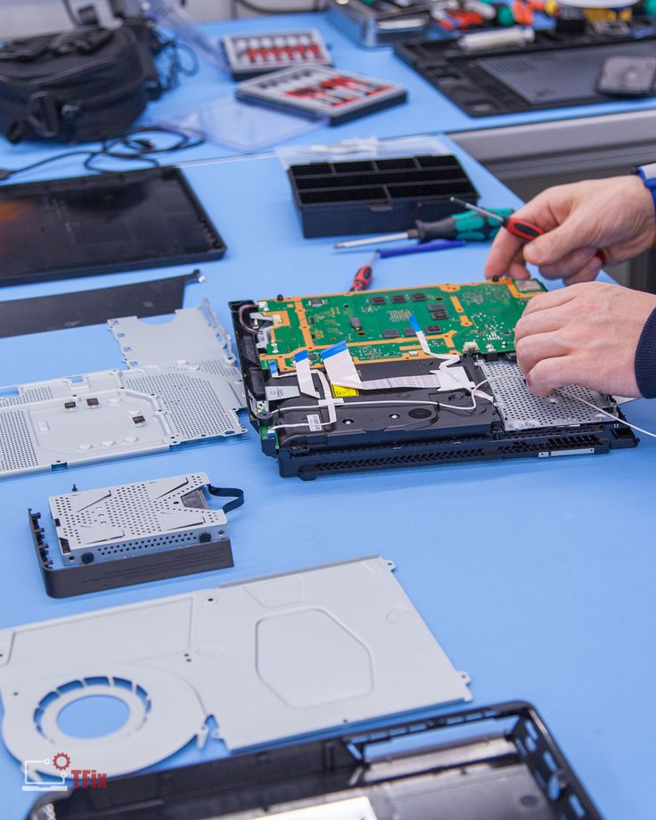
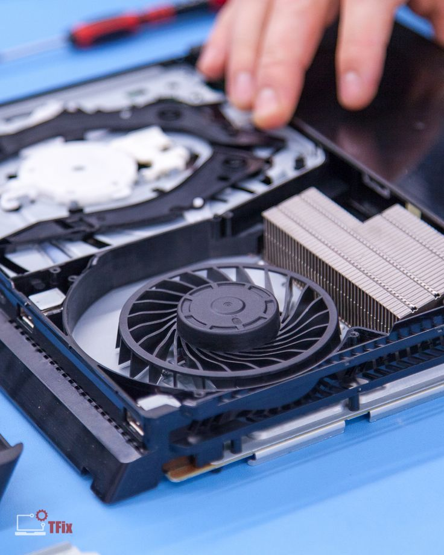
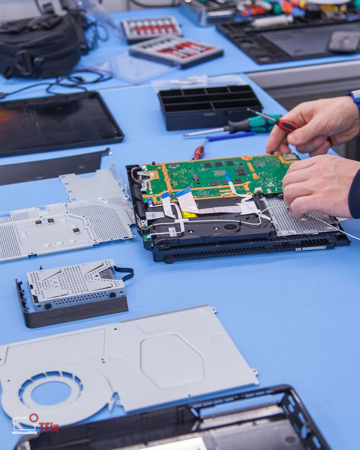
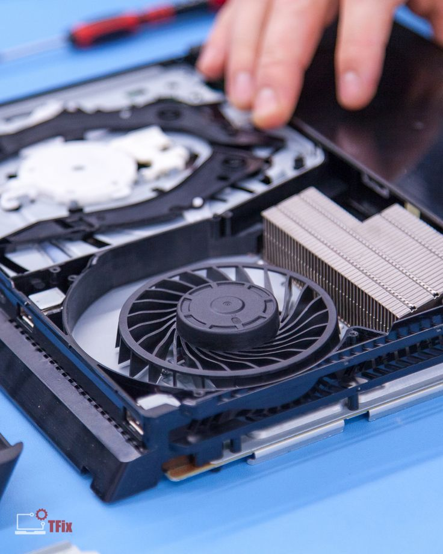

Experiencia-Tecnico Informatico
Servicio tecnico de computadoras
Ofrezco soluciones integrales en el área de mantenimiento y reparación de computadoras, tanto de escritorio como portátiles. Mi servicio está enfocado en devolverle al equipo su rendimiento óptimo y asegurar su durabilidad:
- "Diagnóstico preciso de fallas de hardware (placa madre, memoria RAM, discos, fuente de poder) y software (sistema operativo, errores de drivers)."
- "Limpieza interna y externa para mejorar el rendimiento térmico."
- "Formateo y reinstalación de sistemas operativos."
- "Actualización de componentes: memoria RAM, discos duros, SSD, placas de video, etc. "
- "Armado de PC a medida según las necesidades del cliente (gaming, oficina, diseño, etc.)."


Servicio Tecnico de Consolas
Este servicio está pensado para gamers que quieren prolongar la vida útil de sus consolas y asegurarse de que funcionen de manera fluida y sin fallas. Trabajo principalmente con consolas PlayStation (PS3, PS4, PS5) y con consolas de Nintendo (Wii, Wii U, DS, 3DS, Switch):
Limpieza y mantenimiento general:
- Limpieza profunda interna: desarmo completamente la consola para eliminar polvo y suciedad acumulada en la placa base, ventiladores, rejillas y demás componentes.
- Reemplazo de pasta térmica por compuestos de calidad premium para mejorar la disipación del calor y prevenir el sobrecalentamiento.
Reparaciones comunes:
- Consolas que no encienden, no dan imagen, se reinician solas o presentan luces de error.
- Reparación de problemas en el lector óptico (lectura de discos) o cambio completo del mismo.
- Cambio de puertos HDMI dañados, conectores de alimentación, ventiladores, botones físicos o piezas del chasis.
- Reballing de chips en caso de fallas graves (servicio avanzado, consultar disponibilidad).
Actualizaciones y software:
- Instalación o reinstalación del software del sistema.
- Actualización de firmware oficial o reinstalación en consolas brickeadas.
- Desbloqueo de consolas (dentro del marco legal) para ejecutar homebrews o backups en consolas compatibles (PS3, PS Vita, Nintendo 3DS, etc.).
Joysticks y controles:
- Limpieza interna de joysticks de PS3 y PS4, eliminando suciedad que causa drift o mal funcionamiento.
- Reemplazo de piezas internas: sticks analógicos, membranas, gatillos (L1, L2, R1, R2) o placa USB.
- Reparación o reemplazo del conector de carga en controles inalámbricos.
- Diagnóstico de problemas de conectividad o respuesta lenta.
Este servicio no solo busca devolver el funcionamiento correcto de la consola, sino extender su vida útil y optimizar su rendimiento. Ideal tanto para jugadores casuales como para quienes usan sus consolas de manera intensiva.
 



Servicio técnico y mantenimiento de tarjetas gráficas
Este servicio está enfocado en el diagnóstico, reparación y mantenimiento de placas de video (GPU), tanto para equipos gamer como para estaciones de trabajo. Atiendo modelos de NVIDIA y AMD, desde las gamas más comunes hasta tarjetas de alto rendimiento.
Mantenimiento preventivo:
- Limpieza profunda de la tarjeta gráfica, eliminando polvo acumulado en disipadores, ventiladores y componentes electrónicos.
- Cambio de pasta térmica por compuestos de alta calidad para mejorar la temperatura de funcionamiento y prevenir sobrecalentamientos.
- Reemplazo de pads térmicos deteriorados que afectan la transferencia de calor en memorias y VRM.
Reparaciones y soluciones técnicas:
- Reparación de tarjetas que no dan video, se reinician el sistema o causan pantallazos azules.
- Diagnóstico de artefactos gráficos, glitches visuales o cuelgues en juegos.
- Soldadura de componentes dañados (capacitores, mosfets, bobinas), si es posible.
- Verificación y reparación de conectores HDMI, DisplayPort o DVI rotos o flojos.
- Servicios de reballing o reflow para casos extremos (consultar viabilidad y garantía).
Pruebas y optimización:
- Testeo de estabilidad con benchmarks como FurMark, Heaven o 3DMark.
- Verificación de temperaturas y rendimiento en carga y reposo.
- Optimización de perfiles de ventilación o undervolt para mejorar la eficiencia sin perder potencia.
Otros servicios:
- Asesoramiento sobre compatibilidad con el sistema y reemplazo por modelos superiores.
- Actualización de BIOS de la placa de video si es necesario.
- Limpieza y mantenimiento de tarjetas gráficas en equipos de minería (según el estado).
Este servicio es ideal tanto para gamers exigentes que quieren mantener su equipo al máximo, como para usuarios que necesitan recuperar placas dañadas sin invertir en una nueva. El objetivo es cuidar tu inversión y maximizar el rendimiento gráfico de tu PC.